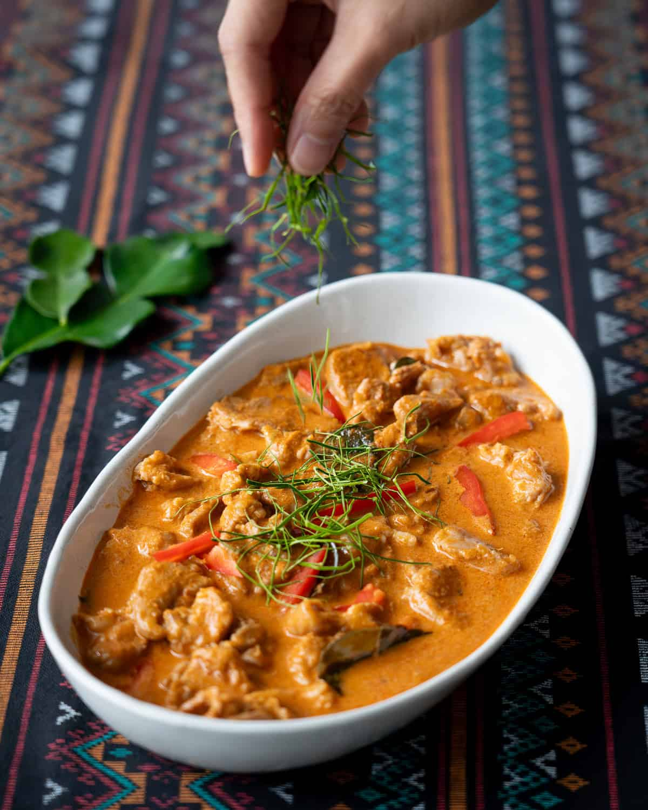

Home

Description
Panang curry is a red thai curry, with a distinctive rich flavor. Panang is made with a combination of red curry, makrut lime leaves, coconut milk and other
assorted spices. In contrast to other Thai curries - which tend to be on the saucier side - panang tends to have a thick sauce, which is very rich.
The distinctive flavor is derived from the curry paste used, which is a doctored with a slightly different set of ingredients than normal red curry;
one of these additional ingredients is roasted peanuts.
Recipe
Serves 2
Ingredients
- 4 tablespoons panang curry paste
- 1.25 cups of coconut milk
- 11 oz pork, thin sliced, against the grain
- 1.5 teaspoons fish sauce
- 2 tablespoons neutral oil
- 10 makrut lime leaves. 7 rough chopped. 3 julliened for granish
- 1.5 tablespoons palm sugar (can sub demerara)
- 1/8th red bell pepper, julliened, for garnish (optional)
- jasmine rice for serving
Directions
- Add your fish sauce and oil to the pork and massage it in. Make sure to seperate peices for maximum coverage.
- In a saute pan or wok over medium high heat, reduce .75 cup coconut milk until it is thickened and creamy. Stir in curry paste and reduce heat to medium
low. Cook for several minutes until coconut oil seperates away from the paste.
- Add palm sugar and torn lime leaves. Cook until the sugar is dissolved.
- Add the pork and toss it with the curry paste, seperating the pieces as much as possible. Once the pork is about half done add remaining coconut milk.
and stir for about a minute. Then turn off the heat.
- Stir in red peppers and add fish sauce to taste.
- Plate with rice and serve.
Home